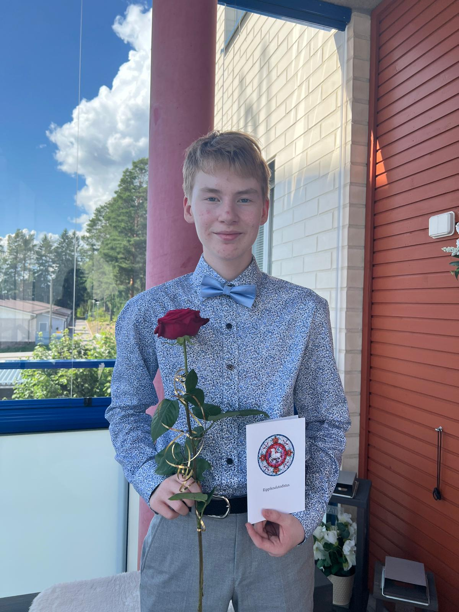

Olet vieraillut sivullani jo 0 kertaa! Legendaarista!
Kuka ihmeen Jimi Mustonen?
Eli siis minä olen Vuorelasta tuleva opiskelija, joka opiskelee Savon ammattiopistossa tieto- ja viestintätekniikan alalla. Tällä hetkellä toinen vuosi menossa ja odotan, että mitä tästä työharjoittelu jaksosta oikein tulee. Olemme juuri opetelleet SQL:llän, REST API JSON:nin perusteet loppuun, aloittaneet Javascriptin työstämistä ja siitä sitten päästiin projektitöihin.
Olen 16-vuotias reipas, oma-aloitteinen ja kuunteleva ihminen, joka tulee toimeen myös muiden ihmisten kanssa. Osaan ottaa ideoita vastaan ja yrittää parhaani tekemään kaikki iloisiksi.
Opinnot
Opiskelin ala-asteen Vuorelan koululla ja yläasteen Suininlahden koululla.
Englannin taitoni on melko vahva ja keskiarvoni oli 7,94.
Savon ammattiopistossa koodaaminen sujuu ja asiat hoidetaan eikä jätetä roikkumaan.
TET- ja TEO-jaksoilla olen ollut Vuorelan Hankkijalla, Vuorelan nuorisotalolla ja Vuorelan koululla.
Nyt opiskelen Savon ammattiopistossa. Ensimmäinen vuosi on paketissa ja uutta on tulossa opittavaksi.
Kuvia minusta


Pari satunnaista projektia
Seuraavat projektit jotka näet ovat satunnaisia asioita, joita olen tehnyt tylsyydestäni ja kiinnostuksesta eri asioihin.
Aina se on hyvä osata vähän sitä ja tätä.
Sieltä löytyy videoeditointii/sunnitteluun liittyvä video, jossa näkyy minun uudelleentehty versio MTV3 2005-2013 kanavailmeestä.
Tämän taustan tarina on lyhyesti se, että halusin nämä musiikit soivan taustakuvana, mutta kukaan ei ole tehnyt sellaista, joten
tein itse sellaisen käyttäen vanhoja TV-tallenteita apuna ja tekemään siitä vähän erillaisen näköisen samalla.
Myös olen tehnyt musiikkia tämän vuoden alusta, että siinä on kolmas biisi, jonka olen itse tuottanut vapaa-ajallani.
Musiikki taustaa muuten ei ole, paitsi ainoastaan yläasteen musiikin pitkä ja lyhyt valinnaiset.
MTV3 Uudelleensuunniteltu
VideopeliKipale (Pianoversio)
VideopeliKipale (Kokoversio)
8Bittinen Kipale
Tutustu myös muihin sivuihin
Voit palata etusivulle tai siirtyä yhteystietoihini alla olevien nappien kautta.